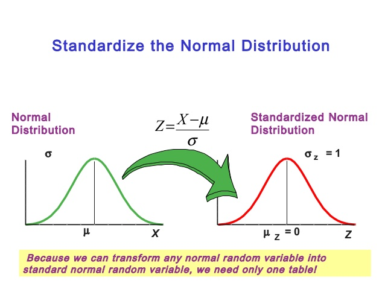

STAT 360 - Lecture 15
Uniform Distribution
Let a continuous random variable $X$ assume values only in a bounded interval $(a,b)$ and that its pdf is constant $f(x)=c$, then
$$1 = \int_a^b c dx = c(b - a) \Rightarrow c = \frac{1}{b-a}$$
So we have that:
$$f(x; a, b) = \begin{cases} \frac{1}{b-a} & a < x < b,\\ 0 & \mathrm{ otherwise.} \end{cases} $$
is the pdf of $X \sim$ UNIF$(a,b)$. The CDF is as follows,
$$F(x; a, b) = \begin{cases} 0 & x \leq a,\\ \frac{x - a}{b - a} & a < x < b,\\ 1 & b \leq x. \end{cases} $$
Uniform Expectation and Variance
It is simple to show that $E(X) = \frac{a+b}{2}$ and that
$Var(X) = \frac{(b-a)^2}{12}.$
HW 4 Problem 1: Prove the above expectation and variance for $X \sim$ UNIF$(a,b)$.
Example (exercise 6.4)
A bus arrives every 10 minutes at a bus stop. It is assumed that the waiting time for a particular individual is a random variable with a continuous uniform distribution.
What is the probability that the individual waits more than 7 minutes?
What is the probability that the individual waits between 2 and 7 minutes?
Normal Distribution
The normal distribution was first published by Moivre in 1733 as an approximation to the distribution of the sum of binomial random variables.
However, at the time Moivre lacked the concept of the pdf and what he published was nothing more than an approximation rule. It was in 1809 that Gauss formalized the normal distribution as a way to explain the method of least squares.
As such, the normal distribution is also know as the Gaussian distribution.
Normal Distribution
If $X$ is a normal random variable with mean $\mu$ and variance $\sigma^2$, then $X \sim N(\mu, \sigma^2)$ and its pdf is described by:
$$f(x; \mu, \sigma^2) = \frac{1}{\sqrt{2\pi}\sigma}e^{-\frac{1}{2\sigma^2}(x-\mu)^2}$$
where $-\infty < x < \infty$.
Properties of the Normal Curve
- The mode, which is the $\max_{x} f(x; \mu, \sigma^2)$, occurs at $x = \mu$.
- The curve is symmetric about the vertical axis throught the mean $\mu$.
- The normal curve is concave down in the interval $(\mu -\sigma, \mu + \sigma)$, and up elsewhere.
- The normal curve has a horizontal asymptote at $y=0$.
- The total area under the curve and above the horizontal axis is equal to 1.
Note that by construction $E(X) = \mu$ and $Var(X) = \sigma^2$.
The Normal distribution is the most important distribution when it comes to practical applications.
Various physical phenomena express exact normality; the Normal distribution can approximate probabilities for Binomial and Poisson r.v.'s; the errors in regression analysis follow a Normal distribution.
Standardizing
Since it is so useful in practice, we better also make it efficient!
If $X \sim N(\mu, \sigma^2)$, then $Z = \frac{X - \mu}{\sigma} \sim N(0,1)$.
This gives us the standard normal curve:
$$Z \sim \phi(z) = \frac{1}{\sqrt{2\pi}}e^{-z^2/2}$$
We will often denote the standard normal pdf by $\phi$ and the standard normal CDF by $\Phi$.
Normal CDF
The normal CDF can be obtained in the usual way and expressed as a linear combination of the Gauss error function:
$$F(x) = \Phi \left(\frac{x-\mu}{\sigma}\right)=\frac{1}{2}\left[1 + erf\left(\frac{x-\mu}{\sigma \sqrt{2}}\right)\right],$$
where $erf(x) = \frac{2}{\sqrt{\pi}}\int_0^xe^{-t^2}dt$.
So with a single table listing the probabilities given by the standard normal CDF, we can perform statistical inference on any phenomenon that is normally distributed or can be approximated by a normal distribution!
Simply by finding $\Phi(z) = P(Z \leq z)$.
Example 1 (exercise 6.6)
Find the value of $z$ if the area under a standard normal curve:
- to the right of $z$ is 0.3622;
- to the left of $z$ is 0.1131;
- between 0 and $z$, with $z > 0$, is 0.4838;
- between $-z$ and $z$, with $z > 0$, is 0.9500.
Example 2 (exercise 6.12)
The loaves of rye bread distributed to local stores by a certain bakery have an average length of 30 centimeters and a standard deviation of 2 centimeters. Assuming that the lengths are normally distributed, what percentage of the loaves are:
- longer than 31.7 centimeters?
- between 29.3 and 33.5 centimeters in length?
- shorter than 25.5 centimeters?
Example 3 (exercise 6.16)
In the November 1990 issue of Chemical Engineering Progress, a study discussed the percent purity of oxygen from a certain supplier. Assume that the mean was 99.61 with a standard deviation of 0.08. Assume that the distribution of percent purity was approximately normal.
- What percentage of the purity values would you expect to be between 99.5 and 99.7?
- What purity value would you expect to exceed exactly 5% of the population?